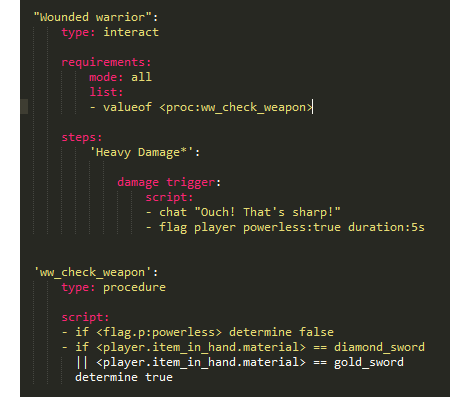
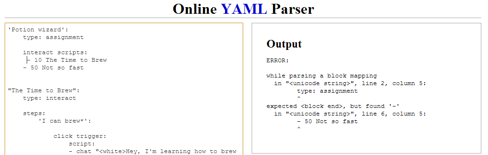

Handbook
WRITTEN BY aufdemrand
and the denizen coding team
Please note: This is a work in progress. Many features
are being tested and tweaked before taking their ‘final
form’. This document attempts to only document things
that are at or near ‘final form’.
Donate:
Thousands of man hours has been put into Denizen. Your donations add a lot
to the project and are always welcome! Your donations will probably help
remodel my house and feed my kids, or help convince my wife this is a
good hobby :)
click here to donate to aufdemrand
Don't forget to donate to the Citizens2 project as well,
as none of this would be possible without that!
Table of Contents:
Introduction/Getting Started | Getting to know dScript | Reference |
Many thanks to a wonderful Community
Experimental Commands | Powered by YAML, a human friendly Understanding how arguments are
| -KILL -ITEM |
Denizen, powered by Citizens2, is an extensive add-on pack that allows for a scriptable Minecraft experience, including enhanced NPCs, custom commands, items, world events and many other features. Inspired by MUDs, features and NPCs powered by Denizen have a unique RPG feel unmatched by any other CraftBukkit solution. Imagine interactive gate-keepers, magic spells, magical wizards, experience trainers, experience and player-stat systems, bankers that have bankers’ hours, talking townspeople, magical quests, and more! Denizen can be used in thousands of different ways, from tutorials, to gameplay, to administering --- your imagination is the limit!
By sharing your scripts, you can enable the most exciting feature. Since dScript, the language that powers Denizen, is made to be easily read, users can share and tweak scripts to fit their needs with ease. Many can already be found online in the Citizens Script Repository @ scripts.citizensnpcs.com.
While we are currently still in pre-release beta, the YAML-based dScript is becoming a fully featured core-set of features that can control your server in hundreds of ways. If that’s not enough, there’s also many ways to extend the functionality since Denizen is being programmed with a fully featured Java API in mind. With some simple Java, it’s easy to make your own dScript commands, requirements, script containers, tags, triggers, and many more. Many plugin developers are already extending their plugins with custom Denizen content for easy use with scripts, and by the time one point ‘o’ hits, we hope your plugins will take notice as well!
The Denizen project has some presence on the web in a few different places. Here are some links which may help get more information as this document is still under construction.
Denizen @ dev.bukkit.org: http://dev.bukkit.org/server-mods/denizen/ Denizen @ wiki.citizensnpcs.com: http://wiki.citizensnpcs.com/Denizen (Note: Wiki is currently documenting version 0.76! 0.8 will be added once pre-release is done.) Latest Denizen 0.8 Development Builds @ Citizens Jenkins: http://ci.citizensnpcs.com/view/Add-ons/job/Denizen/ Denizen Java-docs (for using API): http://ci.citizensnpcs.com/view/Add-ons/job/Denizen/javadoc/? | aufdemrand’s Denizen Channel @ Youtube: http://www.youtube.com/user/aufdem2 (Note: I hope to have some 0.8 videos up soon!) aufdemrand’s Script Repo Page @ Citizens Script Repo: http://scripts.citizensnpcs.com/user/aufdemrand #denizen-dev @ EsperNet: http://webchat.esper.net/?nick=random_denizen_...&channels=denizen-dev&prompt=1 Live chat with the Denizen crew and power-users. This is usually the fastest way to give me some feedback, or to troubleshoot an impossible problem. (Note: Sometimes the chat is quite off-topic... but we like it that way!) Twitter @denizen_ |
Denizen is powered by several core components.
Seem overwhelming? Stop! Denizen is what you make it! Our advice? Start small, and build upon what you have. Read this handbook, check out the wiki articles, watch the youtube videos, test our your scripts, and test out some of the sample scripts! Before you know it, you'll be a Denizen poweruser, drunk with power, just like us!
Speaking as aufdemrand, I am extremely proud of the Denizen project and the relationships it has made. There has been a huge amount of support and enthusiasm from users and other programmers that has blown me away. Nearly 12 months from the first builds of the plugin, Denizen is closer than ever for a release, but many of the new features need to be tested and broken in ways that I could never do by myself. I’ve come to rely on the community, and more personally, you! So let me personally thank you for your contributions, the Denizen project would be nowhere without you! Please direct any problems to the GitHub issues page, or on irc.esper.net in the #denizen-dev chaennel.
Many people have gone above and beyond just using Denizen, and if I could thank everybody, I would, but I definitely want to shout out to these individuals: #citizens-dev crew (fullwall, aPunch, AgentK, NeonMaster), #denizen-dev original crew (instinx, jrbudda, Wreyth, tenowg), some people who have contributed to the project (DrBix, davidcernat, groggluebutt, Spidi, mancub), some Denizen power-users (BearFather, Enohriel, Entez) and my current development team (Jeebiss, GnomeffinWay and SpaceEmotion). Thanks guys!
It pains me to inform you that many of your scripts for 0.76 may be broken when upgrading to 0.8, especially since I’ve come across many ‘power users’ that have thousands of lines worth of dScript already written. The Interact Script and Task Script structure has not changed, but some commands have been reworked and syntax may be slightly different. Assignments, while the structure is mostly the same, is now a script type of its own and no longer is separated from your script files.
I’m confident, however, that the new features that are provided will offset much of the pain in switching over. Some of the futures will provide brand new ways to use your NPCs, but more importantly, many features make using scripts more efficient and easier. With Denizen being my first major Java project there are many things that I have learned along the way. With the huge level of growth between .5 and .76, it became apparent to me code-wise that many things needed to be cleaned up and extended, without sacrificing customizability and usability. I've focused on the core components of Denizen first, mainly the different ‘registries’, making them extensible, easy to read, and clean as possible.
For scripters and server owners, whereas Denizen .76 required you to know dScript and internal mechanics pretty well to get anything out of the plugin, I envision future versions of Denizen having a different level of functionality. There has been great thought and care into making scripts able to be reusable and easily configurable. By adding the ability make make a script installation being as simple as dragging-and-dropping, new types of Denizen/Citizen hybrids can be utilized even with limited knowledge, and hardcore users can dive into the scripting from the top on down. Of course it may not be as straightforward as say, an external citizens trait (ie. Sentry/Cititrader), but the point of Denizen is to be as dynamic as possible. This means the ability to make scripts that are easily traded and shared, and to make sure that is as easy as possible, some changes had to be made. So for the migration migraines this may cause, I ask your forgiveness :)
It’s hard to find a good ‘start point’ when using Denizen, since there are many different scopes, but let’s first take a look at the basic functionality and control of Denizen provided by the use of craftbukkit commands. Since Denizen uses the C2 command system, you may already be familiar with the system.
All commands have a ‘base_command’, a ‘command_name’ and either string values, integer values, value flags (--flag value) or non-value flags (-t). Some commands may use multiple flags at a time. Consider the examples below.
/base_command command_name string value[a] --flag value[b] -t[c]
/npc trigger damage --cooldown 5 -t
Note: Value flags which contain more than one word must be enclosed in quotes.
/base_command command_name --flag “multi word value”[d] --another_flag another_value[e] -t -f
/npc constant --name ‘Default Greeting Text’ --value ‘Hello, player!’
Commands that provide multiple pages of feedback can include an integer number to specify page with some commands. If no number is specified, page 1 is assumed.
/base_command command_name 3[f]
/denizen scripts 3
Denizen commands provide a way to view and configure key components of Denizen, such as version checking and script listings.
Valid commands: version, reload, save, scripts, debug
/denizen version Displays the version and build information about the copy of denizen currently loaded. Will also show currently loaded ‘extensibles’. Example: /denizen version /denizen reload Reloads key disk files into memory, overwriting the copy currently in memory. Must specify which file to reload, or -a for all. Valid values are: scripts, saves, config or the -a flag. Examples: /denizen reload -a /denizen reload scripts Note: When reloading the config, some values require a server-reboot to take effect. /denizen debug Enables or disables the debug-output in Denizen. When writing scripts and troubleshooting, debug output can provide very useful information on the flow of commands and any problems that may occur. Using the -s flag will enable stacktraces, allowing some nitty-gritty error messages for when something seriously goes on. If getting help in #denizen-dev, it’s likely that we’ll ask you to enable this and provide us with the feedback. | Examples: /denizen debug /denizen debug -s /denizen save Saves the contents of the ‘dScript saves’ in memory to disk as saves.yml. Useful for editing the contents while the server is running, using /denizen reload. Example: /denizen save Note: When using Denizen as a production server, there are key events that auto-save the saves.yml, so it’s encouraged that saves.yml be edited only while the server is off. When using on a development server, server action should be brought to a minimum while editing saves.yml. /denizen scripts Note: This command may be moved to /dscript list some time before release. Shows a list of scripts currently loaded into Denizen. Used alone, it lists all scripts, identified by type and name. Use an integer to specify which page to view. Using a type flag will cut down the search results to a specific type. Valid core types include: assignment, interact, task, and activity. Using the filter flag will limit results to a specific search string. Examples: /denizen scripts 4 /denizen scripts --type assignment /denizen scripts --filter ‘hall monitor’ |
To provide add-on features seamlessly to Citizens, Denizen extends the /npc bukkit command to provide an interface with the additional traits added. Some commands listed here are core Citizens commands, provided here since they are commonly used with Denizen features. (DENIZEN! indicates new NPC commands that are available only with Denizen.)
The command to create a new NPC. Must provide a string name. Can also specify a type flag which will change the EntityType of the NPC.
Examples: /npc create Jack /npc create Henry the Great --type enderman /npc create Susan --type cow Selects a NPC to work with. Used alone, it will select the nearest NPC in range. A npcid may also be specified to select a specific NPC.
Examples: /npc select /npc select 10 /npc vulnerable Allows a NPC to be damaged, and killed. Also required (in most cases) when using the ‘health trait’ that is provided with Denizen. Use the -t flag to indicate the vulnerability to be temporary. When temporary, vulnerability will not persist through a restart.
Examples: /npc vulnerable /npc vulnerable -t DENIZEN! /npc health Modifies the current and maximum health of a NPC. While being vulnerable is not required, NPCs cannot lose any health without being vulnerable. By default, NPCs are invulnerable, unable to be damaged. Using the set flag will specify a new max-health. Using the -r flag will reset the NPCs current health to max. Using /npc health with no additional arguments will provide current status.
Examples: /npc health /npc health --set 100 /npc health -r Note: Using /npc health assigns the health trait to an NPC automatically. It can also be assigne or removed with /trait health. In order for vulnerable NPCs to be attacked by Minecraft Monsters, the NPC must be added back into the Bukkit Playerlist. This treats a NPC like a Player, and should be noted that it could conflict with some external plugins. When using this feature, there may also be slightly increased overhead, so it should only be used when necessary.
Examples: /npc playerlist Note: /npc playerlist only works on Player-Type NPCs. DENIZEN! /npc pushable Moves NPCs out of the way when colliding with a Player. Default Citizens behavior is to allow clipping on NPC objects, allowing Players and NPCs to occupy the same space. Can also specify that the NPC be returnable using the -r flag. After being pushed, a returnable NPC will return to its previous location after a delay, which can be specified with the delay flag. Once the pushable trait is enabled, the actual push behavior can be toggled with the -t flag.
Examples: /npc pushable /npc pushable -r --delay 6 /npc pushable -t DENIZEN! /npc SIT/STAND Puts the NPC in the sitting position. If a specific location is desired, it can be specified with the location flag, using the location format x,y,z,world_name, or alternatively, an anchor can be specified by using the anchor flag with the name of the anchor as the value. If you wish to make the NPC sit on the location of your cursor, use the -c flag. Using the /npc stand command, or initiating navigation on a NPC will make the NPC assume a standing postion. Examples: /npc sit --location 128,64,64,world /npc sit /npc sit --anchor chair_location /npc sit -c /npc stand DENIZEN! /npc NAMEPLATE Changes the color of a NPCs nameplate. Examples: /npc nameplate red | Used to specify and view the current assignment of an NPC. Also adds the trigger and constants trait to the NPC. To set an assignment, use the set flag with the name of the script as a value. Remember: Only assignment-type scripts can be assigned. To view information on the current assignment, use /npc assignment. Using the -r flag will remove the current assignment.
Examples: /npc assignment /npc assignment --set ‘town sheriff’ Controls the various settings of interact-script triggers. To specify a trigger, use a string of the name. Use in combination of the -t flag to toggle the trigger on or off. Using the cooldown flag allows the default cooldown for a trigger to be overridden on a NPC level. Changing the cooldown in this manner only affects the selected NPC. Triggers with range settings can also be modified using the radius flag. Using /npc trigger alone displays an overview of all available triggers for the selected NPC. Examples: /npc trigger /npc trigger chat -t /npc trigger proximity --radius 15 /npc trigger damage --cooldown 0.5 DENIZEN! /npc constant Constants are saved strings, or ‘pre-set variables’ that can be set in either an assignment script, or specified at the NPC-level. Constants set to a NPC will override any values also found set in an assignment. With the use of the /npc constant server command, dScripts can be ‘configurable’ in-game. To set a constant, use the set flag with a value of the constant name, along with a value flag along with the new value of the constant. Constants can also be removed using the remove flag. Using /npc constant will show any constants currently known to the specified NPC. Examples: /npc constant --remove allowed_items /npc constant --set ‘welcome message’ --value ‘Welcome to my village!’ Note: Constants are available for use within dScripts with use of a constant replaceable tag. DENIZEN! /npc nickname Nicknames are NPC names on steroids. They are similar to Player display names, but also allow for a level of dynamic content to be used, since they allow the use of replaceable tags. Use the set flag to change a NPCs nickname. When used without any flags, the current nickname is shown. To remove a nickname, use the -r flag. Examples: /npc nickname /npc nickname -r /npc nickname --set ‘<magic><npc.name><gold>, the friendly Wizard’ /npc nickname --set ‘<npc.name>, of Clan <flag.n:clan_name>’ Note: Nicknames, at this time, do not affect the ‘nameplate’ above player-type NPCs. This feature request may become possible in the future. To reference a NPCs nickname use the <npc.name.nickname> tag. DENIZEN! /npc FISH/STOPFISHING Makes the NPC cast a fishing line to a position specified with the location flag, using the location format x,y,z,world_name, or alternatively, an anchor by using the anchor flag with the name of the anchor as the value. If you wish to make the NPC cast to the location of your cursor, use the -c flag. Using the /npc stopfishing command, the NPC will reel in its line. Examples: /npc fish --location 128,64,64,world /npc fish -c /npc fish --anchor chair_location /npc stopfishing DENIZEN! /npc SLEEP/WAKEUP Makes the NPC sleep on a position specified with the location flag, using the location format x,y,z,world_name, or alternatively, an anchor by using the anchor flag with the name of the anchor as the value. When using the /npc wakeup command, the NPC will stop sleeping. Examples: /npc sleep --location 128,64,64,world /npc sleep --anchor chair_location /npc wakeup |
These are some commands that are currently in Denizen that are considered ‘experimental’. Expect the syntax and usage of these commands to be changed before the final release.
To be used with the World Script ‘On Time’ event. Minecraft time 0 = 6:00 in dTime. dTime is based on a 24 hour clock. Examples: /dtime 6 /dtime 23 | Adds a ‘notable location’ which is used throughout Denizen asa ‘location bookmark’ of sorts. Used in the World Script event ‘on walk over...’. Use the name flag to name the location. Examples: /notable add --name ‘secret spot 1’ /notable add --name treasure |
Let’s go through the process of using an existing script. Because of the custom nature of Denizen and dScript, scripts in general may have other criteria to be successfully loaded, but the process should fairly straightforward once the basics are understood, and a good script will make it easy to set itself up.
Scripts loaded into Denizen should be in a valid YAML format and use either a .yml or .dscript file extension. They can be placed into the /scripts/ folder (or any sub-folder in /scripts/) before the server starts up, or after the server is already running by using the ‘/denizen reload scripts’ command. This allows scripts to be edited and reloaded on the fly, useful for tweaking and developing scripts. Keep an eye on the console when loading a new script as Bukkit will throw an exception if any invalid YAML is detected, in which case Denizen will simply ignore the script. If otherwise successful, Denizen will leave a message that the script has been loaded.
Cookies.dscript[g] | |
Use the ‘Cookies’ script as a first example. You can either copy and paste the contents of the script, or download it on the Citizens Script Repo (http://scripts.citizensnpcs.com/view/kx78np). Step 1: Create a new YAML document and copy the contents of the script in the table, or download the script. Step 2: Place it into the /plugins/Denizen/scripts/ folder. Step 3: Start your server, or if already started, use /denizen reload scripts Step 4: Ensure the script has successfully loaded. If the script has produced errors, then check that validity of the YAML document. dScript sits on top of the YAML framework and should follow all YAML rules. To check if the script is loaded, use /denizen scripts Step 5: Create a new NPC, or select an existing one. Step 6: Use the command /npc assignment --set cookies Your NPC is now interact-able, and gives away cookies. Easy peasy! Remember: the script can now be edited at any point, and simply reloaded. Ready for your first customization? Step 1: Change the random entry in the click trigger for step ‘Spreading the Word’ from 3 to 4. Step 2: Add an additional chat entry below - chat ‘Cocoa and wheat make me freak!’ Step 3: Save the file (make sure it is in the /saves/ folder!) Step 4: Use the command /denizen reload scripts The changes will be immediate at that point. When talking with the NPC, it will now choose between the 3 existing chats, or the additional one added, when clicked. It’s worth noting here that multiple NPCs can have the same assignment. | # COOKIES is a small interact script example for 0.8.4+ # This script is kept simple to allow a base scripting # a treat! actions: on assignment:[k] - trigger name:chat toggle:true[l]
steps:[m] script:[p] favorite!' me freak!' you some cookies.' - give item:cookie qty:6 |
dScript is the scripting language that powers Denizen. Getting to know how everything works together is the first step in learning how to customize and create scripts. Consider this the next ‘scope’ of using Denizen. While you can get away with not knowing the nitty-gritty when using Denizen to load and use pre-made scripts, when customizing and creating, knowing how to format and use dScript is the first step.
Getting Started: Your first custom script video, Hello World!
Denizen’s dScript Script Containers use YAML at the core, so getting familiar with YAML is a great thing. Below is a crash-course with some basics laid out here to help understand scripting structure and syntax.
1. Keys and Values
Every value in dScript belongs, in one way or another, to some kind of ‘key’. To define a key, use a string value plus a colon (:). Keys can have a single value, a list value, or own another key.
Here are some basic examples. Click on each line to learn a little bit more.
Generic, verbose examples: | Example dScript (in no particular order): |
standard key: standard value[w] list key: - a list value - a multi-line value - another value[x] single line list key: [value, value 2][y] parent key: child key: child’s value[z] | type: interact[w] script: - drop item:diamond qty:5 - chat “Looks like you could use some sparkle! Have some diamonds.” - narrate ‘Nice, diamonds!’[x] list: [sunny, sneaking][y] ’Example Script’: type: interact[z] |
2. Spacing and tabs
When regarding tabs, though there are some ‘technical’ uses, they should pretty much never be used. The best way to handle this situation is to equip yourself with a good text editor. Both Sublime Text and Notepad++ are good alternatives to notepad which have a ‘tabs->spaces’ feature. Enabling this will take care of quite a few headaches when properly formatting dScript.
Spacing is probably the most important thing about a dScript. The YAML parser uses spacing to determine ownership, as already brushed upon briefly. A good tip is to stick with either 2 or 4 spaces, and keep it consistent! Another important concept to understand is the structure of the ‘script container’, and a general sense of object orientation.
Here are some basic examples. Click on each line to learn a little bit more.
A sample item script container: | A sample assignment script: |
“Ratted_Paper”:[aa] type: item material: paper[ab] display name: A ratted piece of paper lore:[ac] - "[worthless]" | “The Clicker”: type: assignment actions:[ad] on assignment:[ae] - flag npc clicks:0 on click:[af] - flag npc clicks:++ - chat “I’ve been clicked <flag.p:clicks> times!” |
3. Illegal characters/character sequences
A lot of headaches can be taken care of by knowing ahead of time some of the characters/character sequences that may cause problems with YAML. For the most part, take care when using characters: #, !, $, %, &, -, +, < and >, as they are often used as operators in YML and dScript. If you are running into what seems like a bug, check to make sure special characters are where they belong. Most special characters have a replaceable tag alternative if you are wanting to use it in a literal sense inside of a script entry.
Here’s a popular example many people run into:
Error-prone: | Workaround: |
- chat ‘You can say: Apples, Carrots or Fish.’[ag] | - chat ‘You can say<&co> Apples, Carrots or Fish.’[ag] |
If using these characters in a literal sense is necessary, and you run into an issue parsing, many times the problem can be remedied by using a ‘special character’ replaceable tag. See: Appendix S: The Special Character Replaceable Tags
4. Parse it first!
A lot of simple formatting issues can be taken care of if you take the time to parse your script before attempting to load it into Denizen. Though doing so doesn’t catch any dScript errors, it will see problems that will keep the script from loading at all. Invalid YAML will not load into Denizen, period.
Here’s a handy link: http://yaml-online-parser.appspot.com/
 |
Pasting your script into the Online YAML Parser will show any errors in your script with some information that can help track down the issue. Keep in mind that the line causing the error may not always be what the parser complains about, as it may have been interpreted in some other way, only to cause an error a bit further down. In the example above, however, looking between the two lines reported gives a good clue as to where the problem lays.
Denizen uses a very simple base script structure called a ‘script container’ to provide a unified way to control your Minecraft server. Using this interface, different ‘script types’ are able to be combined and used together in dScript files. Bundled by default are a slew of different script container types (generally just called ‘scripts’) that all provide different levels of functionality.
npc SCripts
Assignment Scripts are bound to Citizens2 NPCs and provide a range of features allowing NPCs to become interact-able and pseudo-sentient. This includes actions, which are a lot like events, but unique to the NPC itself, interact script assignments, which allow a great degree of interaction control from Players, and more.
Interact Scripts can be assigned to a NPC via an Assignment Script. With the use of steps and triggers you can control the flow of events of interaction between Players and NPCs.
Navigation Scripts (planned)
Action Set (planned)
Server Scripts
World Scripts provide the ability to intercept and use different types of world events, based on bukkit’s event system, independent of NPCs. Timed events, secret locations, even combat control and food consumption can be controlled by a world script.
Combat Scripts (planned)
Utility Scripts
Task Scripts have many uses, but are mostly used as utility scripts that provide a single function. They can be used by other scripts, or even other plugins. Effectively using task scripts can increase the capabilities of other scripts to provide a way to ‘branch out’ possible scenarios, or cut down on code duplication to make scripts able to be presented cleanly.
Procedure Scripts are kind of like task scripts, except they can return a value. Effectively using procedure scripts, like task scripts, can make dScript code more powerful and efficient.
Format Scripts have the simple, but useful function of formatting the various types of ‘chatter’ that Denizen uses.
OBJECT SCRIPTS
Item Scripts use Minecraft’s NBT data to pre-define custom items to be used throughout Denizen.
Book Scripts allow you to easily create custom books in the form of a script. Book scripts allow for replaceable tags which can be used to customize books for Players, as well.
Entity Scripts (in progress...)
script container specifications
To qualify as a script container, the script should have at least 2 keys. The name of the script container, and a type key with a valid script container type.
name of script:
type: type_of_container
And now, in a bit more detail, each of the container types:
world scripts
World scripts are automatically assigned to the server on startup. There is no need to do anything else, unlike assignment scripts. Instead, world events will be used as needed. Currently, world scripts contain one type of interaction, events. Upon interaction with your server Denizen will look for events specified in your world scripts and execute the contained script entries instantly. Some events are ‘cancellable’, and with the use of the determine (passively) cancelled command, scripts may use custom logic to calculate whether the event should be carried out by craftbukkit/Minecraft. Because the event is called right before the event is parsed, it should be noted that script entries contained in the event script are always run instantly. If a delayed reaction is required, use runtask with a delay to invoke a task script. If you’re familiar with the usage of Interact Scripts you’ll be used to always having a NPC and Player object to work with. It should be noted that for world events, rarely are both objects automatically associated with the script entries, and in some cases, such as the ‘on server start’ event, neither object is automatically available. With the use of the npcid:# and player:player_name arguments, however, the link may be restored for commands that require such objects. Some events also contain some context that can be accessed by use of a context replaceable tag. For more information and further reading, see Appendix W - World Script Events and Context Tags. | Example world script:
|
ASSIGNMENT scripts
Assignment scripts are scripts that define the attributes and interaction of a NPC. Currently, assignment scripts contains several keys: actions, constants, and interact scripts assignments. Actions provide a simple interface to run scripts upon the various events and interactions with a NPC, such as ‘on click’ or ‘on death’. Each action should be nested in the ‘actions’ key in your assignment script. The script entries contained are run instantly, unlike an interact script which uses a small delay in between entries. If a delayed reaction is required, use runtask with a delay to invoke a task script. This is to allow for the ability to determine an outcome of the action, if possible. Like world events, some actions can be modified or even cancelled with the use of the determine (passively) cancelled command by using commands to calculate additional custom logic beyond what Minecraft already takes into account. Some actions are a result of Player interaction with the NPC. If this is true, a valid player is automatically associated with any script entries, however keep in mind this is not always the case. Many actions happen automatically as events arise that call for an action with no reference of a Player, such as ‘on navigation complete’. Such actions may only have a valid NPC link. With the use of the player:player_name argument, however, the link may be restored for commands that require a player. Determining which player should be attached is up to you. Some actions also contain some context that can be accessed by use of a context replaceable tag. For a complete list of actions, see Appendix X - Assignment Script Actions and Context Tags. Default Constants help in making NPC scripts that can easily be used for multiple NPCs without duplicating the scripts unnecessarily. They can also provide as an easy way to provide customization to NPC-centric scripts, as seen in Example 2. With the use of the <cons:constant name> tag, parts of your script can automatically use the value set in default constants. And, since the NPC-link is carried along with any interact scripts or task scripts run, constants can be used in those as well. It’s important to remember that constants are per-npc. In fact, Denizen uses Citizen’s trait system to implement a constants trait. The values of any constants set in ‘default constants’ of the assignment script are carried over into the NPC and ‘inherited’. This is important, because it provides a way to customize a single script for multiple NPCs using some /npc commands. Let’s take this example: Assume that NPC 1 has the ‘bandit’ assignment, and NPC 2 also has the ‘bandit’ assignment. On death, both will chat the ‘death message’ constant, as instructed. However, If I select NPC 1, and use the command /npc constant --set ‘death message’ --value “I’ll get you next time!” On death, NPC 2 will continue to say the default constant as set by the assignment script, but since NPC 1 now has a NPC-specific value for the constant, he will now say ‘I’ll get you next time!’. Now you can have many types of bandits, all controlled by a single script! Additional NPCs assigned will continue to inherit the default constant values. Interact Scripts are also assigned via an assignment script. With interact scripts, several trigger types can be utilized to allow for advanced step-based interaction with Players and NPCs. Multiple Interact Scripts can be assigned as well with a priority system to allow for advanced case situations. | Example assignment script:
|
InterEntity script
Not fully implemented, please check back later.
book script
Book scripts are used by the scribe command to create custom books.
Script Table 3: Book Script |
# Book Script example # # @author Jeebiss type: book title: Title of the Book author: Author of the Book text: - Each item on this list - represents a new page - in the book. You can use - <n> to create a new line - and <p> to create a new - paragraph. |
Entity script
Not fully implemented, please check back later.
ITEM script
Item scripts are used to make custom items for Denizen to use in scripts. Item Scripts are design to work on most cases where you would specify an item including the give, take, and drop commands. You may also require these items by using the script in the item requirement.
Script Table 5: Item Script |
# Item Script example # # @author Jeebiss type: item material: item_base display name: display_name lore: - first line of lore - second line of lore[ar] enchantments: - enchant1:lvl - enchant2:lvl
|
PROCEDURE script
Procedure scripts do something, I promise.[as]
Script Table 6: Procedure Script |
# Procedure Script example # # @author Jeebiss type: procedure |
TASK script
Task scripts are a set of command that can be called using the ‘runtask’ command. Listeners also call task scripts when they complete.
Script Table 7: Task Script |
# Task Script example # # @author Jeebiss type: task script: - command1 - command2 - command3 |
Format script
Format scripts are very useful when you absolutely hate to use copy-paste. Small example: You have various NPCs set up that can give you a quest. Each NPC gives you a message like “Quest given: A new Beginning” - sometimes with colors and fancy stuff! Well, to not have to copy-paste that thing all times over, just use a format script!
The <text> flag is getting replaced by the text output by e.g. the narrate command.
Usage with NARRATE:
- narrate format:quest_given_format “A new Beginning” # Would parsed to: “Quest given by aufdemrand: A new Beginning”
Example format script:
Script Table 8: Format Script |
# Basic format script container
type: format format: <&6>Quest given by <&2><npc.name><&6>:<&f><text>[at] |
Denizen uses quotes and spaces to separate arguments. Understanding how this works will help make sure commands (and anything else that uses arguments, such as requirements, etc.) are correctly interpreted by the dScript engine. The concept is simple; arguments are separated by spaces, except when surrounded by quotes.
The best way to get the hang of this is to see some ‘correct’ and ‘incorrect’ usages. Below are some ‘example outcomes’ of the dScript argument builder. For a visual example, the colors of the arguments demonstrate how Denizen will interpret the arguments, alternating in color. Note: spaces and quotes are generally ignored, except when enclosed by quotes.
Correct: 3 total arguments [arg 1, arg 2, arg 3]
- command ‘arg 1’ ‘arg 2’ ‘arg 3’
Incorrect: 6 total arguments [arg, 1, arg, 2, arg, 3]
- command arg 1 arg 2 arg 3
Correct: 2 total arguments [arg:single_word_value, arg:multiple word value]
- command arg:single_word_value ‘arg:multiple word value’
Incorrect: 5 total arguments [arg:, single_word_value, arg:multiple, word, value]
- command arg:’single_word_value’ arg:multiple word value
Correct: 2 total arguments [arg:”value with quotes”, ‘quoted argument’]
- command ‘arg:”value with quotes”’ “‘quoted argument’”
Incorrect: 3 total arguments [arg:, value with quotes, quoted argument]
- command arg:’value with quotes’ “quoted argument”
Also, take care when using double-quotes and single-quotes with each other, inside arguments. Take the following example, color coded for readability. This will cause problems:
- chat ‘Hey there! It’s a nice day, isn’t it?’
To fix this problem, enclose the argument in double quotes, or use a replaceable tag for your quotes inside. Following are two acceptable alternatives:
- chat “Hey there! It’s a nice day, isn’t it?”
- chat ‘Hey there! It<&sq>s a nice day, isn<&sq>t it?’
|
Command arguments are often placed in some kind of bracket in the usage hints. These brackets show which arguments are required, which arguments are optional, as well as any default settings an argument may have if optional.
Key: Arguments: [] - Required () - Optional {} - Default | - Or
For instance, take the COOLDOWN command, which has the following usage:
COOLDOWN ({PLAYER}|GLOBAL) (#{60}|DURATION:#) (SCRIPT:{script_name})
The first argument, either PLAYER or GLOBAL, is optional. If not set, PLAYER is used. The second argument, either an integer or a valid duration argument, is also optional. If not specified, 60 seconds is inferred. The third argument is also optional; if not set, the current script is used.
For another example, take a look at EXECUTE:
EXECUTE [AS_PLAYER|AS_SERVER|AS_NPC|AS_OP] ['Bukkit Command']
The first argument should be either as_player, as_server, _as_npc or as_op. This is required. The second argument is also required, which should contain the Bukkit command to execute.
Below are all the core dScript commands, listed alphabetically, with an explanation of usage and arguments. As the new commands for 0.8 come into their final form, they will be added here.
Announces a message to the server. This includes all players in all worlds.
Usage:
announce ['announcement message']
Arguments:
['message to announce'] The message to send to the server. This will be seen by all Players.
Example Usage:
- announce 'Today is Christmas!'
- announce "<player.name.display> has completed ‘<flag.p:current_quest>'!"
- announce "<GOLD>$$$<WHITE> Make some quick cash at our MINEA-SINO!"
Changes or removes a NPC’s current assignment.
Usage:
assignment ({set}|remove) [script:assignment_script_name]
Arguments:
[set|remove] Defines the action that should be taken. ‘set’ will change the current assignment. ‘remove’ will remove the current assignment.
[script:assignment_script_name] Defines the new assignment script that should be used. Optional if only using the assignment command to remove the current assignment, but otherwise required.
Example Usage:
- assignment remove
- assignment ‘script:wall guard’
- assignment set script:bartender
Instructs a NPC to attack a target with its hand or wielded weapon. Todo: Add ability to target any Entity.
Usage:
attack (stop)
Arguments:
(stop) Optional. If currently attacking, the NPC will stop when issued the command with the ‘stop’ argument.
Example Usage:
- attack
- attack stop
- attack player:aufdemrand
'Casts' a Bukkit PotionEffectType on a LivingEntity target(s).
Usage:
cast [potion_effect_type] (target(s):npc|{player}|entity_type) (duration:#) (power:#)
Arguments:
[potion_effect_type] Uses Bukkit's PotionEffectType for specifying the potion effect to use.
(target(s):npc|{player}|entity_type) Optional. The recipient of the PotionEffectType. Defaults to the attached Player. Can use a dScript list format to specify multiple targets by using a pipe (|) character.
(DURATION:#{60S}) Optional. The duration of the effects the PotionEffectType causes. If not specified, assumes 60 seconds.
DURATION:#{60s})
Optional. Number of seconds that the PotionEffectType lasts. If not specified,
assumed 60 seconds.
(POWER:#{1})
Optional. A higher amplifier means the potion effect happens more often over
its duration and in some cases has more effect on its target. Usually effective
between 1-3.
Example Usage:
- CAST NIGHT_VISION DURATION:60
- CAST WITHER TARGET:NPC NPCID:<^FLAG.P:enemy_NPCID> CASTER:PLAYER
- CAST REGENERATION DURATION:10 POWER:3
- CAST CONFUSION TARGET:NPC.25 DURATION:60
Flags a player, npc or sets a global flag. Flags can be stand-alone or lists (You can then add or remove stuff from them).
Usage:
flag ({player}|npc|global) [name([#])](:action)[:value] (duration:#)
Arguments:
({player}|npc|global) For whom the flag should be set.
[name([#])](:action)[:value] The flag to set: name defines the flag name, value the content. The action can be one of the following:
++ (increment)
-- (subtract)
* (multiply)
/ (divide)
-> (add to list)
<- (from list)
(duration:#) The expiration duration for the set flag.
Example Usage:
- flag “Got cookies:3”[av]
- flag npc “Given cookies:3”
- flag npcid:<^flag.g:this_npc>[aw] npc[ax] counter:++[ay]
- flag points:--:3[az]
- flag global[ba] “Active Quests:<-:A brand new Adventure”
Listed below are some of the common problems that can occur when using Denizen.
When using Minecraft Color Codes or other special characters I get the error ‘Cannot load plugins/Denizen/scripts/script.yml org.bukkit.configuration.InvalidConfigurationException: unacceptable character...’
To fix this problem, you need to add a ‘-Dfile.encoding=UTF8’ switch to the command file that starts the craftbukkit server to enable UTF8 encoding. This typically only affects Linux users when using foreign characters or color codes.
Example:
java -jar -Dfile.encoding=UTF8 -Xmx1g -Xms1g craftbukkit.jar
Also, as noted, an alternative to using the Minecraft/Bukkit color codes is using a dScript replaceable tag. Example: <gold> as opposed to §6
General information about some Denizen features and structure can be found in this Appendix.
Listed below is the file structure that Denizen uses to read and write various resources, scripts, and saves files.
plugins/
..Denizen/
..config.yml
..saves/
..saves.yml[bb]
..scripts/
..script.dscript
.. ...[bc]
..externals/
..external.command.java
.. ...
..dependencies/
..denizen.jar
..citizens.jar
..bukkit.jar
.. ...
Listeners are the meat of quest style scripts. They ‘listen’ to what the player does, and react accordingly. Once the player has finished a listener, it will run a specified task script. (I’m bad at explaining stuff, so hopefully we can get Auf to make this sound fancier)
LISTEN command
LISTEN can be used several ways:
Issuing a new quest listener:
listen [Listener_Type] [ID:ListenerID][bd] [SCRIPT:task_script][Listener Arguments]
See documentation for Listener_Types and specific arguments for each type.
Canceling a quest listener in progress:
listen [CANCEL] [ID:ListenerID]
Cancels a listener.
Force-finishing a listener in progress:
listen [FINISH] [ID:ListenerID]
Force finishes a listener.. the outcome is exactly the same as the Player completing the listener.
Remember: A PLAYER:player_name argument can always be used to specify a specific player if necessary.
Keeps track of Entities killed by the player.
Usage:
listen kill [type:NPC|PLAYER|GROUP|ENTITY] [target:entity_type] (qty:##) (region:region_id)
Arguments:
[type:NPC|PLAYER|GROUP|ENTITY] defines the type of entity that will need to be killed to be counted. Further defined in the target argument.
[target:target_name|target_name2|...] is a list of the targets that will count as a kill. It varies depending on the type of kill listener. If it is an NPC type, target_name would be the name of the NPC that would count as a kill. For PLAYER type kill listeners, target_name is the player’s name. The GROUP type uses permission group names for target_name. Lastly, ENTITY type kill listeners are for mobs in game (i.e. skeleton, zombie, bat, spider, etc).
(qty:##) is the number of kills the player must get to finish the listener. The default is 1.
(region:region_id) specifies a specific WorldGuard region that the kill must be completed in to count. This allows for narrowing down the listener, and more intimate quests. Currently only supports 1 region name, and not lists like the previous arguments[be].
Example Usage:
- listen kill type:entity target:zombie qty:10
- listen kill type:player targets:Jeebiss|aufdemrand|Entez
- listen kill type:npc target:bandit qty:5 region:bandit_camp
Note: You must include an id: and script: arguments from the listen command, read above.
Keeps track of items made by the player (crafting, smelting, and fishing).
Usage:
listen item [type:CRAFT|SMELT|FISH] [item:item_name|item_name2|...] (qty:##) (region:region_id)
Arguments:
[type:CRAFT|SMELT|FISH] defines the type of action that needs to be done by the player.
[item:item_name|item_name2|...] is the list of the items that needs to be made, in the case of CRAFT and SMELT. item_name can be a Bukkit Material, or an id number. FISH requires item:fish.
(qty:##) is the number of items that need to be made (or number of fish to be caught) to complete the listener.
Note: QTY is tracked when any item on the list is made. If you want X of each item, use separate listeners.
(region:region_id) specifies a specific WorldGuard region that the item must be made in to count. This allows for narrowing down the listener, and more intimate quests. Currently only supports 1 region name, and not lists like the previous arguments.
Example Usage:
- listen item type:craft item:wooden_sword qty:1
- listen item type:smelt items:iron_ingot|gold_ingot qty:10
- listen item type:fish item:fish qty:5 region:fishing_pool
Note: You must include an id: and script: arguments from the listen command, read above.
Keeps track of blocks affected by the player.
Usage:
listen block [type:BUILD|BREAK|COLLECT] [block:block_name|block_name2|...] (qty:##) (region:region_id)
Arguments:
[type:BUILD|BREAK|COLLECT] defines the type of action that needs done to the blocks.
[block:block_name|block_name2|...] is the list of the blocks that needs to be affected for an action to count.
(qty:##) is the number of items that need to be made (or number of fish to be caught) to complete the listener.
Note: QTY is tracked when any block on the list is affected. If you want X of each block, use separate listeners.
(region:region_id) specifies a specific WorldGuard region that the block must be affected in to count. This allows for narrowing down the listener, and more intimate quests. Currently only supports 1 region name, and not lists like the previous arguments.
Example Usage:
- listen block type:build block:log qty:1
- listen block type:break block:iron_ore|gold_ore qty:10
- listen block type:collect block:fish qty:5 region:fishing_pool
Note: You must include an id: and script: arguments from the listen command, read above.
Keeps track of traveling done by the player.[bf]
Usage:
listen travel [type:DISTANCE|TOLOCATION|TONPC] (location:x,y,z,world) (distance:#) (target:NPC.npc_name) (radius:#)
Arguments:
[type:DISTANCE|TOLOCATION|TONPC] defines the type of travel the listener will watch for. The DISTANCE type listens for the player to travel the specified amount of blocks. The TOLOCATION type listens for the player to enter the stated radius around the location specified in the arguments. Lastly, the TONPC type listens for the player to enter the stated radius around the specified npc.
(location:x,y,z,world) is the location that the player must walk to in the TOLOCATION type.
(distance:#) is the number of blocks the player must travel to complete a DISTANCE type listener.
(target:NPC.npc_name) is the NPC the must be reached using the TONPC type listener.
Note: The argument requires you use NPC.npc_name. (example: NPC.jeebiss)
(radius:#) defines a radius around the destination, that the player must enter to complete the listener. Radiuses can only be used on TONPC and TOLOCATION type listeners.
Example Usage:
- listen travel type:distance distance:150
- listen travel type:tonpc “target:NPC.Town Guard” radius:2
- listen travel type:tolocation location:125,65,198,rpgworld radius:5
Note: You must include an id: and script: arguments from the listen command, read above.
Controls the dropping of items from player events. You control the frequency of drops, and now many are needed, and where they drop at.
Usage:
listen itemdrop [type:MOBKILL|BLOCKBREAK|DROPSFROM] (item:item_name) (qty:#) (region:wg_region_name) (location:x,y,z,world) (radius:#) (droprate:#) (dropsfrom:entity_name)
Arguments:
[type:MOBKILL|BLOCKBREAK|BLOCKPLACE] defines the type of action that will drop the item.
(item:item_name) defines the item that will be dropped. The item: arg supports material names, item IDs/data values, and item scripts for custom items.
(qty:#) sets the amount of the item that will be dropped. Once the QTY is reached, the listener completes.
(region:wg_region_name) specifies the WorldGuard region in which the item will drop. Events outside of the region will not drop the item.
(location:x,y,z,world) specifies a location in which the item will drop around.
(radius:#) is the radius around the location argument, that the item will drop in.
(droprate:#) defines the chance that the item will drop. Can be 1-100.
(dropsfrom:entity_name) is the entity that will drop the item if it is a MOBKILL, supports most LivingEntities. For BLOCKBREAK and BLOCKPLACE, DROPSFROM specifies the bukkit material that drops the item.
Example Usage:
- listen itemdrop type:mobkill region:bandit_camp droprate:10 item:zombie_brain qty:5 dropsfrom:zombie
- listen itemdrop type:blockbreak region:dark_cave droprate:65 item:blood_diamond qty:10
- listen itemdrop type:blockplace location:125,68,753,world radius:15 item:secret_note qty:1
Note: You must include an id: and script: arguments from the listen command, read above.
The RUNTASK command will execute an external 'Task Script Container' which can carry out
additional commands. This is especially useful if the current script should 'branch' out
depending on criteria, such as an IF command, or running a task that is called from more than one place, to avoid code duplication. When dealing with these tasks, however, timing needs to be given attention. RUNTASK has some arguments that can specify exactly how the task should be carried out.
First, the different ways to use RUNTASK:
- runtask 'name of script'
Injects the contents of the task script into the current queue,
treating the injected script entries exactly like entries currently
in the queue.
- runtask 'name of script' instantly
Runs the contents of the task script instantly, before the next
command is run in the current queue.
- runtask 'name of script' instantly delay:#
Runs the contents of the task script instantly, but pauses it for
the specified delay. The contents of the current queue continue
on as normal.
- runtask 'name of script' queue
Runs the contents of the task script in a seperate queue, inheriting
either the default speed, or a speed set by the 'speed key' of the
task script being called. The contents of the current queue continue on
as normal.
- runtask 'name of script' queue delay:#
Puts the contents of the task script in a seperate queue, inheriting
either the default speed, or a speed set by the 'speed key' of the
task script being called, but pauses it for the time specified in
the delay argument. The contents of the current queue continue on
as normal.
- runtask 'name of script' queue:name_of_queue
Puts the contents of the task script in a seperate NAMED queue,
inheriting either the default speed, or a speed set by the 'speed key'
of the task script being called. The contents of the current queue
continue on as normal, with the new queue running simultaneously.
- runtask 'name of script' queue:name_of_queue delay:#
Puts the contents of the task script in a seperate NAMED queue,
inheriting either the default speed, or a speed set by the 'speed key'
of the task script being called, but pauses it for the time specified
in the delay argument. The contents of the current queue continue on
as normal.
In a nutshell, there are a couple different behaviors and limitations that should be noted:
When using 'runtask script_name' with no additional arguments, the contents of the task script is injected into the current script in place of the runtask command. If a 'speed key' is present on the task script, it is ignored since this queue already has a set speed. Do note, however, that if a 'queue set_speed:#' command is present, it WILL change the speed, and affect the speed of any remaining script-entries.
+
Take the following as an example: | Example execution order, with timing:
|
+ (New queue created)
'example_script': | command1 args
type: task | (10 ticks)
speed: 10t | command2 args
script: | (10 ticks)
- command1 args | command3 args
- command2 args | (10 ticks)
- command3 args | addlcommand1 args +
- runtask 'addl_commands' | (10 ticks) |
- command4 args | addlcommand2 args <--<< These commands have been
- command5 args | (10 ticks) | injected from the task
- command6 args | addlcommand3 args + script specified. Injection
| (10 ticks) is the default behavior of
'addl_commands': | command4 args the 'runtask' command.
type: task | (10 ticks)
speed: 5t <------<< Note that since | command5 args
script: this is being | (10 ticks)
- addlcommand1 args called from an | command6 args
- addlcommand2 args existing queue, | (Queue ends)
- addlcommand3 args it is ignored. |
+
+
Here's another example, showed with | Example execution order, with timing:
the 'queue set' command to change up |
speed on a queue. |
+ (New queue created)
'example_script': | command1 args
type: task | (10 ticks)
speed: 10t | queue set speed:5 <--<< The speed of the queue
script: | (5 ticks) that is processing this
- command1 args | addlcommand1 args script is changed to 5.
- runtask 'addl_commands' | (5 ticks) Notice that the remaining
- command2 args | command2 args entries of the script
- command3 args | (5 ticks) are also affected.
| command3 args
'addl_commands': | (Queue ends)
type: task |
speed: 5t |
script: |
- queue set speed:5 |
- addlcommand1 args |
+
So to wrap this concept up, tasks called by runtask will inherit the queue and speed from which it was called. There are times in which this behavior may be unwanted, however, but rest assured that there are ways to modify behavior. First up: INSTANTLY
To avoid inheriting speed, when using INSTANTLY, a NEW ScriptQueue is created to run the commands carried out.
+
In this example, the INSTANTLY argument | Example execution order, with timing:
is used. |
+ (New queue created)
'example_script': | command1 args
type: task | (10 ticks)
speed: 10t | runtask 'addl_commands'
script: | instantly >>---------> (New queue created)
- command1 args | addlcommand1 args
- runtask 'addl_commands' instantly | (Queue resumes) <-+ addlcommand2 args
- command2 args | (10 ticks) | addlcommand3 args
- command3 args | command2 args +---<< addlcommand4 args
| (10 ticks) (Queue ends)
'addl_commands': | command3 args
type: task | (Queue ends)
script: |
- addlcommand1 args |
- addlcommand2 args | Note: The new queue created is an instant queue,
- addlcommand3 args | which has no speed. The entirety of the script
- addlcommand4 args | is processed upon creation.
+
So far all the examples have been called from task scripts, but it's worth mentioning that the behavior is the exact same when being called from any other script, say for example, an interact script. Since interact scripts have a default speed (7t by default), any task script called with runtask will inherit the speed of the interact script, unless...
Queues. When creating a NEW queue, the task script 'speed key' will be used to define the starting speed. Think of queues like 'threads', or 'processes'. Multiple queues run independently of each other, allowing many things to happen on their own. By default, Denizen makes a new queues all the time. For each action, or trigger from an interact script, a new anonymous queue is created, the contents of the script is added to it, and each command is carried out. New interactions and actions, even if triggered while a queue is currently carrying out execution of commands, are run simultaneously in a seperate queue.
For example, use the following diagram as an example of timing. Though generalized, it should give a small visual of how multiple interactions are executed independently.
Appendix R, Table 4: Example of script queue timing. |
Player clicks on NPC >>--------------------------------------------------> (New Queue created) |
Introducing the QUEUE argument for RUNTASK.
So far, the examples have showed how to inject entries from a task script into a currently
running queue. Sometimes it is desired to make a new queue to carry out the script contents.
Appendix R, Table 5: Runtask using the ‘queue’ argument. |
Take the following as an example: | Example execution order, with timing: |
The QUEUE argument can also have a value to give the queue a name. This is useful if the queue will need to be modified after creation
(...still developing)
Included in Denizen are some ways to use special characters in situations that the YAML or dScript engine may disallow specific combinations. This is useful, for example, when using the ‘:’ character literally, or using foreign characters when UTF-8 is not enabled.
<&co> : | newline <&nl> | <&cm> , | <&ss> § | <&sq> ' | <&dq> " |
<&lb> [ | <&rb> ] | <&cl> { | <&cr> } | <ä> ä | <ä> Ä |
<ö> ö | <Ö> Ö | <ü> ü | <Ü> Ü |
Appendix T: Core Replaceable Tags
(Still being compiled and documented... see http://pastebin.com/KBADLinZ for a down and dirty partial list)
Included in Denizen are some utility scripts meant to make some common tasks easier.
Following is a list of currently implemented world script events, and any specific context tags that can be accessed from the event. To utilize a specific piece of context, use the context replaceable tag.
Example: <context.ip> or <context.message> Note: Some event names can contain ‘dynamic’ information which is indicated with the use of [brackets]. Many events use the DETERMINE script command to return a response back to the event, which can modify behavior or stop the event altogether. By default, using DETERMINE will stop the script and return the determined value instantly. If this is undesired, use the passively argument, which will record the determination, but allow the script to fully execute before returning. For example: - determine passively cancelled On [command_name] command: On command: Fires right before a command is processed. This can be used to mimic the behavior of a standard bukkit command by determining the event fulfilled, then performing any needed commands. The ‘args’ context will fulfill any replaceable tags used in the command. Note: This only works for player commands, console commands are ignored. There currently seems to be no way around this limitation. Also note: Running a script without determining it fulfilled will still send an error message from bukkit stating it is an unknown command. To avoid that message, it MUST be determined fulfilled. Available context: command - contains name of the command args - contains a dScript list of the arguments, with tags filled raw_args - contains the arguments as exactly typed in by the player, no tags filled. Available Determinations: DETERMINE FULFILLED On player login: Fires when a player logs in. This is before the join event and can be used to determine whether the player should be allowed to continue logging in. Available context: hostname - contains the player’s hostname Available Determinations: DETERMINE KICKED DETERMINE 'KICKED:Kick message.' On player join: On player quit: Fires when a player joins/quits the server. Modification of the default message can be changed by determining a message. The player invoking the event is also attached and may be referenced. Available context: message - contains the current message that will show Available Determinations: DETERMINE 'MESSAGE:New message.' On walked over [notable location]: Fires when a player walks over a defined notable location. This may fire several times while walking over the location, so some kind of logic should be used to provide some kind of cooldown if that is not intended. Determining the event frozen will keep the Player from moving. The Player walking over the location is attached to the entries and can be referenced. Note: Use the /notable add --name name_of_location command to add a new notable location. Available context: notable_name - contains the name of the location walked on Available Determinations: DETERMINE FROZEN On [#]:00 in [WORLD_NAME]: on time change in [world_name]: Fires when the game-time matches the hour. This time is based on a 24-hour clock. Using /time set 6000 will set the time to 1:00. This offset is found at http://www.minecraftwiki.net/wiki/Day-night_cycle (click on the day/night clock). Denizen has a /dtime # command which will calculate the offset. For example, /dtime 12 would be the same as /time set 6000. To save on CPU-cycles, there may be a slight delay of up to 10 seconds before firing the event. Currently, only the hour can be harnessed, not minutes. For example, ‘On 1:30 in world:’ will not work. Available context: time - contains the hour of the current time world - contains the world name On player regains health: Fires when a player’s health level increases. Comes with ‘reason’ context which further explain the reasoning of the health event. Valid reasons: EATING, ENDER_CRYSTAL, MAGIC, MAGIC_REGEN, REGEN, SATIATED and CUSTOM. Can also determine the amount of health that should be regained or whether the event should be cancelled altogether. Available context: reason - contains why the health is being regained amount - contains the amount of health to be regained Available Determinations: DETERMINE CANCELLED DETERMINE AMOUNT:# On player damaged: On player damaged by [cause]: on player damaged by npc: on player damaged by [entity_type]: Fires when a player is damaged. Comes with ‘cause’ context which further explain the reasoning of the damage event. Valid causes: BLOCK_EXPLOSION, CONTACT, DROWNING, ENTITY_ATTACK, ENTITY_EXPLOSION, FALL, FALLING_BLOCK, FIRE, FIRE_TICK, LAVA, LIGHTNING, MAGIC, MELTING, POISON, PROJECTILE, STARVATION, SUFFOCATION, SUICIDE, VOID, WITHER and CUSTOM. Can also determine the amount of health that should be taken or whether the event should be cancelled altogether. Available context: cause - contains why the damage is being inflicted amount - contains the amount of damage inflicted damager - contains the damager, if a NPC it contains the npcid damaging entity - contains the entity_type of the damager Available Determinations: DETERMINE CANCELLED DETERMINE DAMAGE:# On SERVER START: Fires when the server first starts up, after all plugins have been loaded. On player DEATH: Fires when a player dies. Modification of the default message can be changed by determining a message. The player invoking the event is also attached and may be referenced. Available context: message - contains the current message that will show Available Determinations: DETERMINE 'MESSAGE:New message.' On player chats: Fires when a player chats. Modification of the message can be changed by determining a message. The player invoking the event is also attached and may be referenced. Determining cancelled will stop the event (and the chat), as well as stop any chat trigger from triggering. Available context: message - contains the current message that will show Available Determinations: DETERMINE 'MESSAGE:New message.' DETERMINE CANCELLED | Example world scripts:
|
Following is a list of currently implemented assignment script actions, and any specific tags that can be accessed from the action. To utilize a specific piece of context, use the context replaceable tag.
Example: <context.amount> or <context.message> Note: Some action names can contain ‘dynamic’ information which is indicated with the use of [brackets]. Many actions use the DETERMINE script command to return a response back to the action, which can modify behavior or stop the action altogether. By default, using DETERMINE will stop the script and return the determined value instantly. If this is undesired, use the passively argument, which will record the determination, but allow the script to fully execute before returning. For example: - determine passively cancelled (This section will be filled out soon, but for now, here’s a list of all the actions currently implemented) on despawn: on spawn: on remove: on assignment: on remove assignment: on cast fishing rod: on reel in fishing rod: on catch fish: on start fishing: on stop fishing: on death on death by [entity_type] on death by entity on death by block on death by [death_cause] on exhausted on push on push return on sit on stand on sneak on click on chat on enter proximity on exit proximity on move proximity on damage on unavailable on no click trigger on no damage trigger On BEGIN NAVIGATION On COMPLETE NAVIGATION ON cancel navigation on cancel navigation due to [cancel_reason] on attack on attack on [entity_type] | Example assignment scripts:
|
-------- END --------
Below here is a copy/paste scratchpad.
Many thanks to a wonderful Community
How to use the server command system
powered by YAML, a human friendly markup language
Understanding how arguments are interpreted
Appendix R: Understanding script timing when using RUNTASK
Appendix U: Core Utility Scripts
Appendix W: world script events and context tags
Bandit:
type: assignment
actions:
on assignment:
- trigger name:proximity toggle:true
- trigger name:damage toggle:true
- vulnerable
- ^execute as_npc "npc select <npc.id>"
- ^execute as_npc "npc health --respawndelay 11s"
on enter proximity:
- if <flag.n:in_pursuit> queue clear
- flag npc in_pursuit:true duration:30s
- random 3
- chat "Give me your stuff and scram!"
- chat "What are you looking at? Prepare to meet your doom!"
- chat "You look like you have some good stuff! Hand them over nicely!"
- lookclose toggle:true
on exit proximity:
- attack
- lookclose toggle:false
- chat "Come back, <player.name>!"
on death:
- chat "Arrgghhh!"
- random 3
- drop item:268 qty:1
- drop XP qty:10
- drop item:298 qty:1
- flag npc in_pursuit:!
[bh]
[bi]
[bj]
[bk]
,
of the denizen Handbook
[a]Jeremy Schroeder:
Some commands require some kind of string value. Typically, in this kind of case, such values are 'required' in the use of the command. For example, /npc create npc name, or /denizen reload scripts. Both 'npc name' and 'scripts' are required for the command to function.
[b]Jeremy Schroeder:
Value flag, named 'flag' and a value of 'value'. Value flags are sometimes optional, but usually provide some additional information about the intent on the command.
[c]Jeremy Schroeder:
Non-value flag, named 't'. Non-value flags are usually used to toggle some kind of state.
[d]Jeremy Schroeder:
Multi-word value flags must have the value enclosed in quotes. In this example, the flag named 'flag' has a value of 'multi word value'.
[e]Jeremy Schroeder:
Values in a value flag that are a single word do not use quotes.
[f]Jeremy Schroeder:
Usually integers outside of a flag indicate a page number, though this may not always be the case.
[g]Jeremy Schroeder:
Click on different parts of the script for a description.
[h]Jeremy Schroeder:
This is the assignment script-container's name: Cookies
This is the same name that the script will be referenced with in-game when assigning.
[i]Jeremy Schroeder:
Use the 'type' key to define the type of script-container this is. The type of this script-container is 'assignment'. This the is base-script of an NPC and is used to define what will happen with the NPC when interacted with.
[j]Jeremy Schroeder:
This key defines interact-type scripts that should be checked when interacting. This may contain multiple entries, but in this case, only has one.
[k]Mason Adkins:
This action is executed when the script is assigned.
[l]Mason Adkins:
This script uses Chat Triggers which are not enabled by default. The trigger command will enable it when the script is assigned.
[m]Jeremy Schroeder:
Interact-scripts use steps to handle multiple situations with interaction. This is the parent-key for all steps contained.
[n]Jeremy Schroeder:
This step is called 'Spreading the Word'. Each steps should have a name, unique to the entire Interact-script. The asterisk (*) behind the name indicates that this should be the 'default' step when interacting for the first time with this script.
[o]Jeremy Schroeder:
This step contains a click trigger. No configuration keys are needed for a click trigger, just a script.
[p]Jeremy Schroeder:
Contains a list of script entries that should be carried out when called upon. Notice that the indentation indicates that it belongs to click trigger, thus being the script that executes on click trigger. Indenting items in YAML (and therefore dScript) indicate inter-object ownership.
[q]Jeremy Schroeder:
This step also contains a chat trigger. Note that unlike a click trigger, chat triggers are required to be named, since there could be multiple chat triggers per step.
[r]Jeremy Schroeder:
This should be a name for the chat trigger, unique to this step. Keep in mind: this is not the actual trigger-word.
[s]Jeremy Schroeder:
Each chat trigger requires a trigger-key and a script-key. Trigger-key specifies the criteria and replacement text of the trigger. In this case, 'cookie' is the trigger word.
[t]Jeremy Schroeder:
When this script is run, it contains a command used when another step needs to be activated. The next time the Player interacts with this NPC, the step 'Cookies Given' will be used instead of the default.
[u]Jeremy Schroeder:
Another step in this interact-script. This is enabled by talking to the NPC.
[v]Jeremy Schroeder:
This step only has one trigger. When clicked, the script below will trigger. This will continue to be the response from the NPC after getting cookies since there is no change of step in the script.
[w]Jeremy Schroeder:
The basic key/value relationship. In this example, 'standard value' is owned by 'standard key'. You'll see this a lot in dscript, such as defining the type of a script, the mode of requirements, or a modifier in a trigger.
[x]Jeremy Schroeder:
The basic key/list value relationship. Multiple values, or 'entries', can be owned by a single key. This is the format that you'll see when writing script entries. Each entry must start with a - followed by a space. Spacing is critical, and should be line up exactly with the key, like seen here. Also notice that values can span multiple lines.
[y]Jeremy Schroeder:
Alternative way to do a key/list value relationship. This is what is typically used when doing requirements lists since requirements tends to be fairly simple with few arguments, but can be used at any time.
[z]Jeremy Schroeder:
'Ownership' is an extremely important concept to understand. 'Parent keys' can have multiple 'children' keys, and even 'grand-children' keys and so-on. In this example, think of the parent key as being the name of a script-container. If an interact script, it could have multiple keys that it owns -- for instance, 'Example Script:' will have a Type: key, Steps: key, and possibly a Requirements: key. Each of those will have keys and values of its own, but they all belong to the parent 'Example Script:' key.
[aa]Jeremy Schroeder:
Notice this script uses 4 spaces. Two or four, it doesn't matter as long as all keys in the script follow suit. Items scripts create parameters of a new 'item object' using a script container to specify attributes.
[ab]Jeremy Schroeder:
The 'material' key is owned by the script, so it has one level of indentation. The same goes for display name and the type keys.
[ac]Jeremy Schroeder:
The 'lore' key has the same indentation as material, indicating that it is owned by the 'Ratted Paper' script. Lore is a list, so items belonging to the 'lore' key are listed below, with each new entry starting with a '-', indented as indicated here.
[ad]Jeremy Schroeder:
the 'actions' key belongs to the script 'The Clicker'. Note that this example uses a 2-space convention.
[ae]Jeremy Schroeder:
'on assignment' belongs to 'actions', so it is indented 2 more spaces to indicate ownership to the key.
[af]Jeremy Schroeder:
'on click' is owned by 'actions' as well. Make sure spacing is consistent!
[ag]Jeremy Schroeder:
Stray colons (:) can cause issue when a space follows, such as what is used in this example. To fix, simply use a replaceable tag for a colon character (<&co>) in place of the colon.
Bradley Rentfrow:
Could you provide a list of these replaceable tag for these special characters?
Jeremy Schroeder:
Done, see Appendix S.
[ah]Jeremy Schroeder:
Note: On this kind of event, there is no valid Player or NPC object automatically associated with the script entries. Player: and NPCID: arguments can be used on any script entry to satisfy that link, however.
[ai]Jeremy Schroeder:
Valid for every hour, must specify world-name. Replaceable tags are not yet valid forevent names. ie. on 1:00 in <flag.g:special_world> will not work. Minecraft time 0 = 6:00.
[aj]Jeremy Schroeder:
Note that this will not be the command for notable locations in its final form. See the 'bukkit commands' section for planned final usage.
[ak]Jeremy Schroeder:
Use the command /notable add --name 'name of location' to add a notable location. This command is still developing.
[al]Jeremy Schroeder:
This action fires when the NPC is assigned the script.
[am]Jeremy Schroeder:
Instruct the 'click' trigger to become enabled. This may be enabled already due to a default, but it's good measure to make sure.
[an]Jeremy Schroeder:
This actions is provided by the click trigger. It will run this script on each right click the Player uses on the NPC.
[ao]Jeremy Schroeder:
This will keep track of the number of clicks so far by incrementing a flag stored on the NPC named 'clicks'. Using the ++ action will increase the current value by one.
[ap]Jeremy Schroeder:
This command will choose 1 of the next 4 entries and discard the other 3.
[aq]Jeremy Schroeder:
This replaceable tag will recall the value of 'clicks' as an integer. The 'n' indicates the flag is stored on the NPC.
[ar]Anonymous:
So when I use this, and I drop the item item_script_name the name I see would be the display name?
Jeremy Schroeder:
If you pick the item up, yes, it will be labeled as whatever the display name is.
[as]Mason Adkins:
Auuufff, love me.
[at]spaceemotion:
inside the format you can use ANY tag you want!
[au]Anonymous:
Can't you let a bot do that?
Jeremy Schroeder:
This tag system is hanging on what might be the last major update to Denizen before 1.0. I'm discouraging hard docs on the rest of the tags until that code is finalized. This is my main focus and will be done soon. After that, there'll be lots of docs with these explained :)
[av]Jeremy Schroeder:
Leaving out the argument that indicates where the flag should be stored will automatically assume that it should be stored on the player attached to the entry.
[aw]Jeremy Schroeder:
Why the ^? npcid: and player: arguments with tags must be resolved before any other replaceable tags, which is done by using a ^ like shown here.
[ax]Jeremy Schroeder:
Even though a npcid has been specified, the flag command still needs to know that the flag should be stored on the NPC, which is done by using the 'npc' argument as shown here. npcid: only updates the npc linked to the scriptentry.
[ay]Jeremy Schroeder:
Increment and subtract actions that do not have a value specified will assume 1. In this example, the NPC flag 'counter' will be incremented by 1.
[az]Jeremy Schroeder:
This player flag named 'points' will have 3 subtracted from its current value.
[ba]Jeremy Schroeder:
Global flags will resolve the same no matter which NPC or player is in question. Think of them as a 'server-wide' variable.
[bb]Jeremy Schroeder:
These files are generated and maintained by the Denizen plugin, and in most circumstances should not be edited by hand.
[bc]Jeremy Schroeder:
Remember: any .dscript or .yml file in the /scripts/ folder will attempt to load on startup or a /denizen reload scripts
spaceemotion:
In the latest version of Denizen, scripts inside subfolders of the script folder also will load (when enabled in config)
Anonymous:
dscript is confusing and will also break formatting in Notepad++ as it uses the extention yml
Jeremy Schroeder:
I know it seems pretty pretentious to make my own 'extension'... but keep this in mind:
1) All dScript is .yml, but not all .yml is dScript, so it helps to make a distinction.
2) I've started working on a custom syntax highlighter for sublime text2, so in order to make that work, it needed its own extension.
If it helps, sublime text2 can handle the extension and still format for yml. Are you sure notepad++ can't? If it's easier for you though, using .yml is just fine.
[bd]Anonymous:
What if some listener with the specified Id already exists?
[be]Anonymous:
An example how I specify such a list? Do I have to put commata or multiple type: ?
Jeremy Schroeder:
Typically, denizen 'dLists' use the | character to seperate items.
[bg]Anonymous:
Would it have the same effect if I start a listener to listen for kills an then drop my item manually?
[bh]Anonymous:
God bless the author of this Plugin. I can't tell you how many non-markup language based plugins there are out there. I know a good deal of object oriented languages but YAML is so easy work with.
Again, the author is a genius.
[bi]cressalbane1:
What happened to the HINT command? It was really handy.
[bj]jbullen:
Are you going to link to this from the Wiki? Or publish it in the wiki?
[bk]Jorgemolamazo:
Hi
Someone there?
- ^TAKE item:4 QTY:64 <-- anyone knows why this don't work ?
i'd tested - ^TAKE 'item:4' QTY:64 - ^TAKE cobblestone QTY:64 - ^TAKE ITEM 'item:4' QTY:64 - ^TAKE item:cobblestone QTY:64 - ^TAKE item:cobble QTY:64
Can someone help me, please?